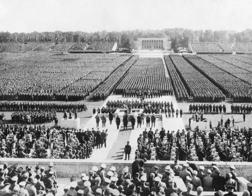
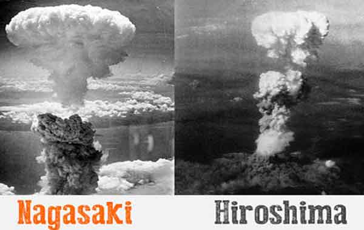

Segunda Guerra Mundial
- A Segunda Guerra Mundial estendeu-se de 1939 até 1945.
- O conflitou resultou que a guerra provocou mais que 70 milhões de mortos.
- A guerra iniciou-se na Europa, mas espalhou-se pela África, Ásia e Oceania e contou com o envolvimento de nações de todos os continentes, inclusive o Brasil.
- Pode ser organizada em três fases distintas: a fase da supremacia alemã, a fase em que as forças estavam equilibradas e a fase que marcou a derrota do Eixo.
- Os grupos que se enfrentaram na guerra foram: os Aliados (Reino Unido, França, União Soviética e Estados Unidos) e o Eixo (Alemanha, Itália e Japão).
A Segunda Guerra Mundial teve como grande causa o expansionismo e o militarismo da Alemanha Nazista. Ao final da Primeira Guerra Mundial, consolidou-se fortemente na sociedade alemã uma ideia de que a derrota na guerra havia sido injusta. Somado a isso, havia também a grande humilhação que a Alemanha sofreu com o Tratado de Versalhes, acordo que pôs fim à Primeira Guerra e que proibia a Alemanha de ter navios e aviões de guerra, limitou ao número de 100 mil os soldados de infantaria, obrigou a nação alemã a pagar uma indenização altíssima e a entregar suas colônias para aqueles que a derrotaram.
Para piorar, na década de 1920, durante a República de Weimar, a Alemanha encarou uma crise econômica duríssima, que levou o país à falência. Os nazistas ocuparam o poder da Alemanha em 1933, e Adolf Hitler, o líder do partido nazista, iniciou uma campanha de recuperação da Alemanha, de doutrinação da população e de perseguição às minorias. A Alemanha, ao recuperar a sua economia, partiu para o rearmamento.
À medida que a Alemanha fortaleceu-se militarmente, Hitler deu início ao seu expansionismo territorial. A ideia dele era construir o lebensraum, o “espaço vital” que os nazistas tanto almejavam. Ai deu inicio ao expansionismo germânico. A Alemanha seguiu com suas invaões, o que resultou a resposta dos Britânicos e franceses à agressão alemã contra a Polônia com uma declaração de guerra. Esse foi o início da Segunda Guerra Mundial.
A Segunda Guerra Mundial pode ser dividida em três fases para melhor entendimento dos acontecimentos do conflito, a saber:
- Supremacia do Eixo (1939-1941): nessa fase, tornaram-se notórios o uso da blitzkrieg e a conquista de diversos locais pelas tropas da Alemanha. Além disso, na Ásia, os japoneses conquistaram uma série de territórios dominados por britânicos, franceses e holandeses.
- Equilíbrio de forças (1942-1943): nessa fase, os Aliados conseguiram recuperar-se na guerra, tanto na Ásia quanto na Europa, e equilibraram forças com os alemães. Essa fase ficou marcada pela indefinição de quem ganharia o conflito.
- Derrota do Eixo (1944-1945): nessa fase, o Eixo estava em decadência. A Itália foi invadida; Mussolini, deposto; os alemães e japoneses passaram a ser derrotados sucessivamente e ambos os países entraram em colapso.
Nos dias 6 e 9 de agosto de 1945, o lançamento de bombas atômicas contra as cidades de Hiroshima e Nagasaki determinou a morte de milhares de civis japoneses. Mediante tal ação, a Segunda Guerra Mundial chegava ao seu fim com a assinatura da rendição nipônica, em 2 de setembro de 1945.
